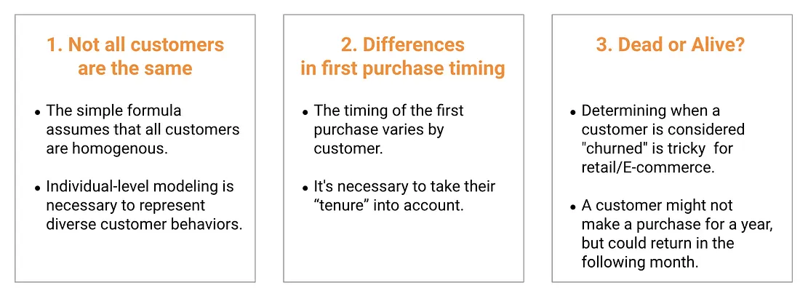

4.2 Customer Lifetime Value Modeling
Most marketing teams focus on Cost Per Acquisition (CPA), often used interchangeably with CAC (Customer Acquisition Cost): lower CPA means a better campaign. Customer Lifetime Value (CLV), often called LTV in analytics and SaaS contexts, reframes the question. Instead of asking how cheaply you can acquire a customer, it asks how much each customer is worth over time, and uses that answer to set the CPA ceiling.
This chapter shows how to predict CLV at the individual level using probabilistic BTYD models (BG/NBD + Gamma-Gamma with PyMC-Marketing), and how to turn those predictions into budget decisions.
Why CLV Changes the Decision
Consider a fashion e-commerce brand acquiring customers through ads and coupons. Say two segments dominate the funnel: college students and working professionals. The first purchase looks like this:
- College student: $10 acquisition cost, $100 purchase → 10× ROAS.
- Working professional: $20 acquisition cost, $100 purchase → 5× ROAS.

On day-one ROAS, the choice looks obvious: put more budget into students. But the long-run picture flips it. College students churn after the first transaction, so their lifetime spend stays near $100. Working professionals return and spend more over time, with an average lifetime spend of $400. Suddenly, the “expensive” segment is actually the bargain.

This is the gap CLV modeling closes. Without it, every customer gets the same CPA ceiling, which means overpaying for low-value customers and underpaying for high-value ones. With it, the ceiling scales to the predicted value, so the same budget acquires more of the right customers.

CLV across the customer lifecycle
CLV is useful at every stage: at Acquisition to spend more on high-value segments, at Growth to prioritize service and exclusive offers for high-value customers, and at Retention to focus save-the-customer campaigns where the math actually works.
The three goals of a CLV model follow directly: (1) predict future value at the individual level, (2) identify what makes high-CLV customers different, and (3) feed both into marketing budget decisions.
Why the Traditional Formula Falls Short
The textbook CLV formula has three components:
\[ \text{CLV} = \text{Average Order Value} \times \text{Purchase Frequency} \times \text{Customer Lifespan} \]
For a fashion brand where customers spend $100 per order, shop 4 times a year, and stay loyal for 3 years: \(\text{CLV} = 100 \times 4 \times 3 = \$1{,}200\). Simple, intuitive, and useful for rough business sizing, but too coarse for customer-level decisions. It collapses on three points.

Limitation 1: Not all customers are the same. Averaging across the whole base misrepresents both ends of the distribution:
| # of Customers | Average CLV | Total Sales | |
|---|---|---|---|
| Normal customers | 90 | $100 | $9,000 |
| Big-shop customers | 10 | $10,000 | $100,000 |
| Total | 100 | $1,090 | $109,000 |
The $1,090 average exists in the data and describes no one. You need CLV at the individual level.
Limitation 2: Different first-purchase timing. A customer who started a year ago has a full year of observable data; one who started three months ago has much less. Raw frequency counts conflate “low engagement” with “new arrival” unless you adjust for tenure.

Limitation 3: Dead or alive? In subscriptions, churn is observable: the customer cancels. In retail and e-commerce, it is not. Whether a customer counts as “alive” depends on their own pattern. Someone who buys monthly going silent for three months is a red flag; someone who buys every six months skipping three is normal.

All three problems have the same root: a single average cannot represent a heterogeneous customer base. The fix is to model CLV at the individual level, which is exactly what BTYD does.
BTYD: The BG/NBD + Gamma-Gamma Framework
Buy-Till-You-Die (BTYD) modeling is two probabilistic models stitched together:
- BG/NBD predicts the probability a customer is still active and their future transaction count.
- Gamma-Gamma estimates their average order value.
Multiply the two, discount over time, and you get individual-level CLV with calibrated uncertainty bounds.

BG/NBD Model
The BG/NBD model assumes two latent processes in a customer’s lifecycle:
- Purchase process. While the customer is alive, purchases follow a Poisson process with rate \(\lambda\).
- Dropout process. After each purchase, there is a probability \(p\) that the customer becomes permanently inactive.

Both \(\lambda\) and \(p\) vary across customers. A Bayesian hierarchical structure handles this: \(\lambda\) values follow a Gamma distribution across the base, \(p\) values follow a Beta distribution. The model learns population-level patterns while still producing individual estimates.
A useful consequence: the probability a customer is alive evolves over time. It drops as the gap since the last purchase grows, then jumps back up the moment a new purchase comes in.

Further reading (BG/NBD)
For a full derivation including the graphical model and likelihood function, see Fader et al. (2005).
Gamma-Gamma Model
The Gamma-Gamma model estimates average order value. It uses a two-layer Bayesian hierarchy: one Gamma distribution per customer (their own spending pattern), and another Gamma over the customer base (variation across customers).
Further reading (Gamma-Gamma)
For a full derivation, see Fader and Hardie (2013).
When BTYD is not the right tool
BTYD is built for non-contractual settings (retail, e-commerce) where churn is unobservable. For contractual settings like SaaS or subscriptions, where the customer explicitly cancels, survival analysis (Kaplan-Meier, Cox Proportional Hazards) is the better fit. If you already have rich behavioral features and a production ML pipeline, an ML regression (e.g., LightGBM) on a fixed-horizon target will likely outperform BTYD, and a practical hybrid is to feed BTYD outputs (P(alive), expected purchases) into the ML model as features. The companion scripts 01_data_features.py and 02_modeling.py (under notebooks/part4-customer-analytics/lightgbm-companion/) show an end-to-end LightGBM implementation.
Implementation with PyMC-Marketing
PyMC-Marketing is built on PyMC and replaces the lifetimes library (now in maintenance mode). The headline feature is built-in uncertainty quantification: every CLV estimate comes with HDI bounds, so you can see how confident the model is for each customer.
The CLV model needs only sales transactions: customer ID, transaction date, transaction value. Two to three years of history is usually enough.

Data and RFM-T Summary
We use the Dunnhumby “The Complete Journey” grocery-retail dataset, the same dataset used in the traditional segmentation notebook (sec4.1_traditional_segmentation.py). This lets you carry the same roughly 2,500 households from the traditional segmentation pipeline into CLV; after standard cleaning (removing negative-value transactions and zero-quantity rows) and RFM-T construction, the companion notebook models 2,497 customers.
| Metric | Definition |
|---|---|
| Recency | Duration between a customer’s first and most recent purchase |
| Frequency | Number of repeat purchases (total purchases minus one) |
| Monetary | Average value of a customer’s transactions |
| Tenure | Duration between a customer’s first purchase and the end of the study period |
import pandas as pd
from datetime import datetime, timedelta
from pymc_marketing import clv
# Load Dunnhumby transactions and convert DAY counter to datetime
# (see companion notebook for the full pipeline)
BASE_DATE = datetime(2012, 1, 1)
data["date"] = data["DAY"].apply(lambda d: BASE_DATE + timedelta(days=int(d) - 1))
data_summary = clv.utils.rfm_summary(
data, "CustomerID", "date", "TotalSales", time_unit="D"
)
data_summary.index = data_summary["customer_id"]Full end-to-end implementation: model fitting, CLV estimation, and demographic-segment analysis using the Dunnhumby dataset.
Fitting and Estimating CLV
# --- BG/NBD: purchase frequency + P(alive) ---
bgm = clv.BetaGeoModel(data=data_summary)
bgm.fit()
# --- Gamma-Gamma: average order value ---
nonzero = data_summary.query("frequency > 0")
gg_data = nonzero[["customer_id", "frequency", "monetary_value"]]
gg = clv.GammaGammaModel(data=gg_data)
gg.fit()
# --- Combined CLV estimate (DCF with 1% monthly discount) ---
clv_estimate = gg.expected_customer_lifetime_value(
transaction_model=bgm,
data=data_summary[[
"customer_id", "frequency", "recency", "T", "monetary_value"
]],
future_t=120, # 120 months = 10 years
discount_rate=0.01,
time_unit="D",
)The output includes not just point estimates but HDI (Highest Density Interval) bounds. In this API, future_t is measured in months, while time_unit="D" tells the model that the RFM-T inputs are measured in days. The model tells you how confident it is for each customer.
Probability Alive Matrix
A quick way to see what the BG/NBD model has learned is the Probability Alive matrix. Recency on one axis, frequency on the other, color showing P(alive). Four corners tell four stories: new customers (low both), loyal repeaters (low recency, high frequency), at-risk (high recency, high frequency: they used to buy a lot, now they have gone quiet), and one-time passersby (high recency, low frequency).

Revenue CLV → Profit CLV
Revenue CLV → Profit CLV
The Gamma-Gamma model estimates revenue per transaction. To make CLV useful for budget decisions, convert revenue to profit:
\[ \text{CLV}_{\text{profit}} = \text{CLV}_{\text{revenue}} \times \text{Gross Margin} \]
If margins vary a lot across product categories, compute customer-specific margins from purchase history instead of using a flat rate.
Combining Segments and CLV
Join the segment_id from the segmentation chapter (Chapter 4.1) with each customer’s CLV estimate. This gives you the operating table the part has been building toward: what kind of customer this is, what they are worth, and what the business should do for them.
Demographics can still help describe or reach a segment, but the main decision layer is behavioral segment × predicted value. The companion notebook joins CLV estimates with the Dunnhumby hh_demographic.csv so you can profile each segment along age, income, and household composition: useful for picking creative and channel, less so for setting budget.
Putting CLV to Work
Once you have a clv_estimate per customer, three applications come almost for free. These patterns work for any CLV score: downstream systems only need a customer ID and a number.
- CPA ceilings for ad bidding
Set the maximum CPA as a fraction of predicted profit CLV:
\[ \text{Allowable CPA} = \text{CLV}_{\text{profit}} \times \text{Target acquisition ratio} \]
If a segment has a predicted profit CLV of $200 and your target acquisition ratio is 33%, the max CPA is $66. For bidding under uncertainty, use a conservative lower bound of predicted profit CLV rather than the mean. Many ad platforms can ingest value signals for value-based bidding or audience rules, but the exact implementation depends on the platform.
- Churn alerts for CRM
Flag customers whose P(alive) drops more than 30 points in 30 days. The signal is the rate of change, not the absolute level. A customer whose P(alive) fell from 0.85 to 0.40 in a month is far more urgent than one who has been steady at 0.35 for six months. The first is disengaging; the second is just a low-frequency buyer.
- Cohort forecasts for Finance
Aggregate individual CLV estimates by acquisition cohort and project revenue at 12, 24, and 36 months. Include HDI bounds so Finance knows these are probabilistic estimates, not fixed targets. This is how you answer “What is the expected return on our Q3 acquisition spend?” without making the CFO learn BG/NBD.
Monitoring
Compare predicted to actual revenue per cohort at 3, 6, and 12 months. If the ratio drifts more than ±20%, retrain. Also check CLV predictions for bias against protected groups: models trained on under-served segments will perpetuate that bias by predicting lower CLV and setting lower acquisition bids.
Key Takeaways
- CLV reframes marketing budget decisions. Instead of hitting a uniform CPA target, set acquisition and retention spend in proportion to what each customer is actually worth.
- The traditional formula is too coarse. It ignores customer heterogeneity, tenure differences, and the dead-or-alive ambiguity that defines non-contractual settings.
- BTYD (BG/NBD + Gamma-Gamma) handles all three problems with transaction data alone, and returns calibrated uncertainty out of the box. For richer features or contractual settings, switch to ML regression or survival analysis respectively.
- Three immediate applications: CPA ceilings (use a conservative lower bound), P(alive) change alerts for CRM, and cohort revenue forecasts for Finance.